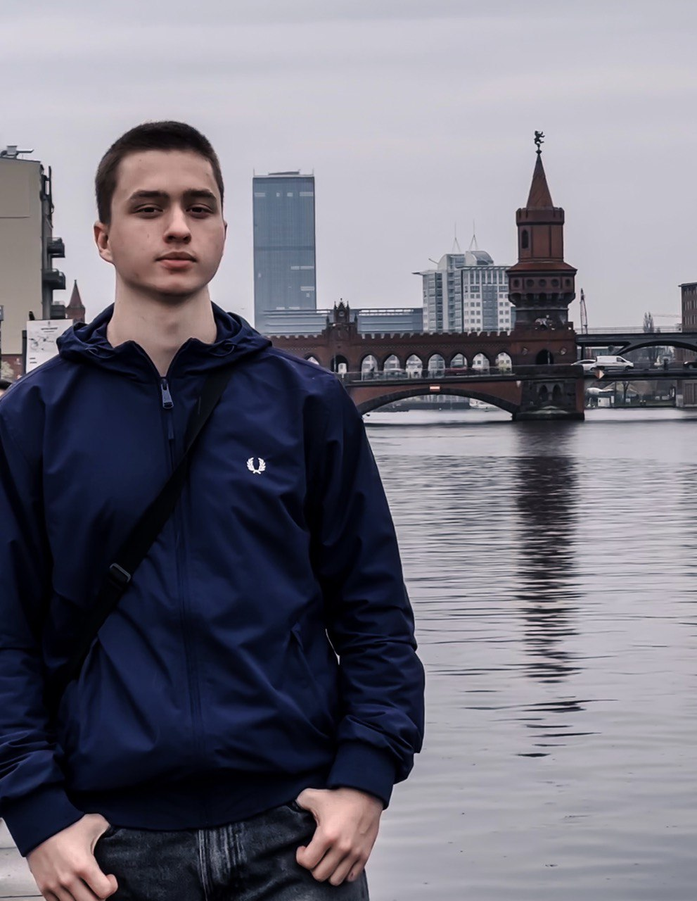

Vadym Hrabovliuk

04.07.2005 (19y.o)
Bremen, Germany
 itsvadikk@gmail.com
itsvadikk@gmail.com
 Telegram
Telegram
 WhatsApp
WhatsApp
 015172694266
015172694266
Education
- 2022-2024: Alexander von Humboldt High School Bremen
- 2011-2022: General education school of grades I-III number 6, city of Druzhkivka (Ukraine)
Languages
- German: B2
- English: B1
- Russian: nativ language
- Ukrainian: nativ language
Skills and Abilities
- Computer Skills: Advanced proficiency in Microsoft Office Suite (Word, Excel, PowerPoint).
- Teamwork: Ability to effectively collaborate within a team and contribute to achieving common goals.
- Customer Orientation: Strong customer focus with the ability to understand and fulfill customer needs.